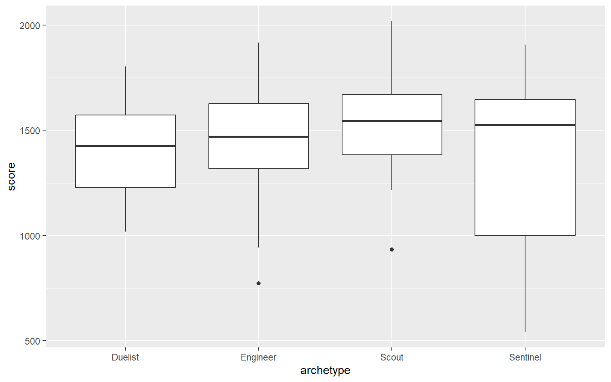
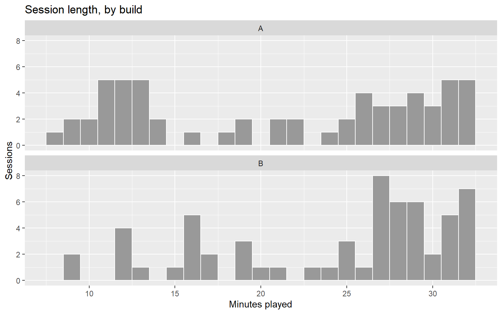
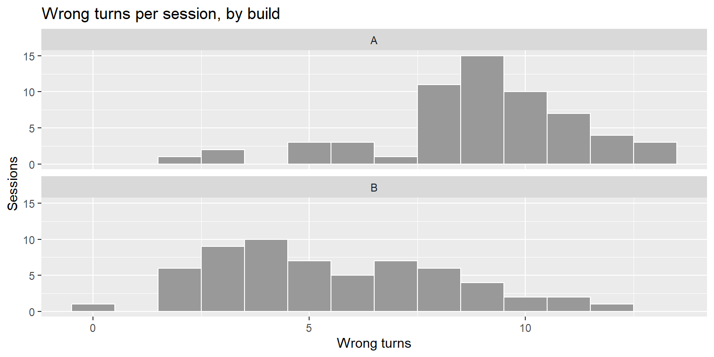
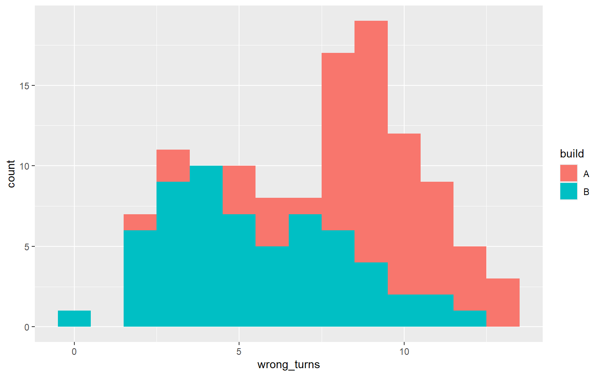
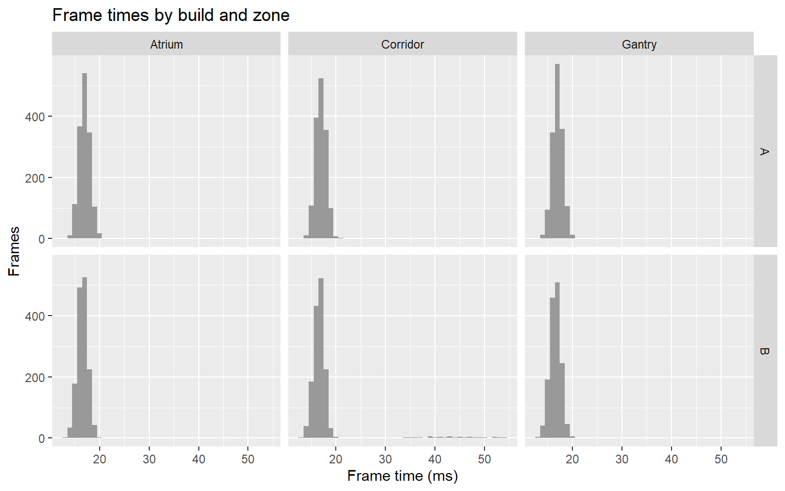

ggplot2 figures, t-tests, and whether a difference matters
Overview
Build B added lighting and signage to guide players through Tidebreak. This lab asks the question the team built it to answer:
Does improved environmental guidance help players navigate the level?
Part A rebuilds your Week 1 base R plots in ggplot2, then goes further than base R comfortably can. Part B puts a size, an interval and a p-value on the differences, and asks the question no function answers: does this difference matter?
Function
What it does
ggplot(), aes()
Start a figure: the data and the mapping
geom_histogram(), geom_bar(), geom_boxplot()
Draw it
facet_wrap()
One panel per group
labs()
Title and axis labels
group_by(), summarise()
One row of summaries per group
t.test()
Independent-samples and paired t-tests, with confidence intervals
aggregate()
Collapse several rows per player into one
Learning outcomes
By the end of this lab you can:
build histograms, bar charts and boxplots in ggplot2, split by group with fill or facets, and label them for a reader;
choose the figure that makes a comparison easiest to see, and defend the choice;
run an independent-samples and a paired t-test, and pull the estimate, interval and p-value out of the result;
tell “no meaningful difference” apart from “cannot tell” using a confidence interval;
decide whether a statistically significant difference justifies a design change.
Ground rules
Draw before you test. Every Part B exercise assumes you have looked at the data first.
Type the code. Open the solution after your attempt, even when your attempt worked.
Every exercise ends with a short written answer. Write it. The Challenge is assessed on the writing, not the code.
When you report a difference, give its size and its interval, not only the p-value.
binwidth is in the units of the variable, so 100 means each bar covers 100 points of score.
Write 1 sentence: point to the data, the mapping and the geometry in your code.
Exercise 02 — A boxplot, rebuilt [Do]
Redraw Lab 01’s boxplot of score by archetype in ggplot2.
TipSolution
ggplot(sessions, aes(x = archetype, y = score)) +geom_boxplot()

The base R formula score ~ archetype becomes a mapping: the group on x, the numeric variable on y.
Write 1 sentence: what did base R make you type that ggplot2 did not, or the other way round?
Exercise 03 — Quit reasons, by build, for a reader [Apply]
Draw the count of each quit_reason, with the two builds side by side in different colours. Give it a title, drop the redundant x-axis label, and label the y axis and the legend properly.
TipSolution
ggplot(sessions, aes(x = quit_reason, fill = build)) +geom_bar(position ="dodge") +labs(title ="How sessions ended, by build",x =NULL, y ="Sessions", fill ="Build")
fill = build is mapped, so it changes with the data and earns a legend. position = "dodge" stops the bars stacking, so each build’s bar starts at zero and the two can be compared directly.
Write 2 sentences: remove position = "dodge" and look again. Which comparison does the stacked version make harder, and why?
Exercise 04 — Where Build A loses players [Apply]
Draw a histogram of session_minutes with one panel per build, stacked so the x axes line up, with bins one minute wide. Where does Build A lose players that Build B keeps?
TipSolution
ggplot(sessions, aes(x = session_minutes)) +geom_histogram(binwidth =1, fill ="grey60", colour ="white") +facet_wrap(~ build, ncol =1) +labs(title ="Session length, by build", x ="Minutes played", y ="Sessions")

facet_wrap(~ build, ncol = 1) is the line base R has no short equivalent for. The fill is set, not mapped, because the panel labels already say which build is which.
Write 2 sentences: describe where Build A’s extra early exits happen, and connect them to one bar in Exercise 03.
NoteCheck your answer
Build A has a cluster of sessions ending between minutes 11 and 13: 11 of them, against 4 in Build B. They line up with the Frustrated bar in Exercise 03, where Build A has 20 sessions to Build B’s 5.
Exercise 05 — One figure for the level designer [Decide]
The level designer wants one figure that answers: did the signposting reduce wrong turns? Draw at least two candidates for wrong_turns by build, pick one, and justify it.
TipSolution
ggplot(sessions, aes(x = wrong_turns)) +geom_histogram(binwidth =1, fill ="grey60", colour ="white") +facet_wrap(~ build, ncol =1) +labs(title ="Wrong turns per session, by build",x ="Wrong turns", y ="Sessions")

ggplot(sessions, aes(x = wrong_turns, fill = build)) +geom_histogram(binwidth =1)

One defensible answer: the faceted histogram. The shared x axis makes the shift obvious at a glance, and it shows something a boxplot flattens: Build B is wider as well as lower, so the signposting helped most players and some hardly at all. A side-by-side boxplot is also defensible for a reader who is used to them.
What makes it defensible. The figure makes the comparison the question asks about the easiest thing on the page to see, and hides nothing the designer would want to know.
What would make it indefensible. The stacked histogram: Build A’s bars sit on top of Build B’s, so Build A’s shape cannot be read. Or a bar chart of the two means, which throws away the spread entirely.
Write 2 sentences: what does your chosen figure show that the two means alone would hide?
Part B — Is the difference real, and does it matter?
Exercise 06 — Describe before you test [Do]
Using group_by() and summarise(), produce one row per build with the number of sessions and the mean, median, standard deviation and IQR of wrong_turns.
# A tibble: 2 × 6
build n mean median sd iqr
<chr> <int> <dbl> <dbl> <dbl> <dbl>
1 A 60 8.92 9 2.37 2
2 B 60 5.52 5 2.70 4.25
n() counts the rows in each group. Always report it: a difference means little without the number of players behind it.
Write 1 sentence: Build B’s standard deviation is larger than Build A’s. What does that mean for a player?
Exercise 07 — The independent-samples t-test [Do]
Run the t-test comparing wrong_turns between builds. Store the result, then pull out the two means, the confidence interval and the p-value separately.
TipSolution
result <-t.test(wrong_turns ~ build, data = sessions)result
Welch Two Sample t-test
data: wrong_turns by build
t = 7.3208, df = 116.07, p-value = 3.492e-11
alternative hypothesis: true difference in means between group A and group B is not equal to 0
95 percent confidence interval:
2.480141 4.319859
sample estimates:
mean in group A mean in group B
8.916667 5.516667
Each player played one build only, so this is the independent-samples test. Pulling out the parts with $ is how you get the numbers into a sentence with inline R rather than by copying.
Write 2 sentences: is the confidence interval for Build A minus Build B, or Build B minus Build A? How can you tell from the output?
Exercise 08 — The same players, both builds [Apply]
paired records 30 players who each played both builds. Run the paired t-test on wrong_turns_a and wrong_turns_b, then run the unpaired test on the same two columns. Compare the widths of the two confidence intervals.
Same estimate, but the paired interval is 1.9 wrong turns wide against 3.2. The paired test compares each player with themselves, so differences in player skill cancel out.
Write 2 sentences: the paired file does not record which build each player played first. Why does that matter, and what would you change about the next paired study?
Exercise 09 — No difference, or cannot tell? [Apply]
Run the t-test on enjoyment by build and on items_collected by build. Neither is significant. For which one can you say there is no meaningful difference, and for which can you only say we cannot tell?
TipSolution
enjoy <-t.test(enjoyment ~ build, data = sessions)items <-t.test(items_collected ~ build, data = sessions)enjoy$conf.int
Read each interval against the size of the variable. Enjoyment’s interval runs from -0.35 to 0.35 on a seven-point scale: whatever the true difference is, it is too small to matter. That is no meaningful difference. The items interval runs from -1.01 to 0.34 items, when a typical player collects about 4. Build B’s players could be collecting up to 1.0 more items each, or up to 0.3 fewer. That is cannot tell.
Write 2 sentences: why is “not significant” a weaker statement than “the confidence interval is narrow and sits around zero”?
Exercise 10 — “Players play longer in Build B” [Decide]
t.test(session_minutes ~ build) gives p = 0.037, and Build B’s sessions are about 3 minutes longer on average. The producer wants to put “players play 3 minutes longer in Build B” in the pitch. Do you let them? Test before you decide: compare session length between the builds for players who did not quit in frustration.
TipSolution
not_frustrated <- sessions[sessions$quit_reason !="Frustrated", ]t.test(session_minutes ~ build, data = not_frustrated)
Welch Two Sample t-test
data: session_minutes by build
t = 0.63783, df = 88.126, p-value = 0.5252
alternative hypothesis: true difference in means between group A and group B is not equal to 0
95 percent confidence interval:
-1.564143 3.042780
sample estimates:
mean in group A mean in group B
26.19750 25.45818
One defensible answer: no, because the claim describes the wrong thing. Among players who did not quit in frustration, Build A averaged 26.2 minutes and Build B 25.5 (p = 0.53). Frustration quits end at a median of about 11.7 minutes in both builds. Build B does not make anyone play longer. It makes fewer people quit early, and that pulls its average up. The honest pitch line is “fewer players quit in frustration”, which is also the stronger claim.
What makes it defensible. It checks what is driving the difference before describing it, and it replaces the claim with one the data supports.
What would make it indefensible. Approving the line because the p-value is below 0.05. The difference is real; the explanation attached to it is not.
Write 3 sentences: a significant difference in a mean can come from every player shifting a little or from a few players shifting a lot. How do you tell which, and why does it change the design conclusion?
Exercise 11 — Which number goes in the report? [Decide]
You have three estimates of how much the signposting reduced wrong turns: the session-level test from Exercise 07, the paired study from Exercise 08, and a player-level test that averages each player’s 4 sessions first. Run the player-level test, then decide which result leads the report.
TipSolution
per_player <-aggregate(wrong_turns ~ player_id + build, data = sessions, FUN = mean)player_test <-t.test(wrong_turns ~ build, data = per_player)player_test$conf.int
One defensible answer: lead with the player-level result, and cite the paired study as support. The session-level test treats 120 sessions as independent when they come from 30 players, so its interval is narrower than the data justifies. The player-level interval, 2.4 to 4.4 wrong turns, is honest about that. The paired study, a different design with different players, points the same way, which is worth more than any single p-value.
What makes it defensible. It picks the analysis whose assumptions match how the data was collected, and it uses the other two as corroboration rather than choosing between them.
What would make it indefensible. Picking whichever result has the smallest p-value or the largest effect. That is choosing the answer, not the analysis.
Write 2 sentences: why is agreement between two differently designed studies stronger evidence than a very small p-value from one?
Challenge — Build B was meant to be an improvement. Was it? [Decide]
The producer asks one question before approving Build B for the next milestone: was it an improvement?
Build the evidence you would take into that meeting. Use more than one measure, and keep four kinds of evidence separate: what the figures show, what the descriptive statistics say, what the tests say, and whether each difference is big enough to matter. frames is loaded in the Setup block.
ImportantOne defensible answer
# 1. Navigation: the question Build B was built to answert.test(wrong_turns ~ build, data = sessions)
Welch Two Sample t-test
data: wrong_turns by build
t = 7.3208, df = 116.07, p-value = 3.492e-11
alternative hypothesis: true difference in means between group A and group B is not equal to 0
95 percent confidence interval:
2.480141 4.319859
sample estimates:
mean in group A mean in group B
8.916667 5.516667
# 2. Did players stay and finish?table(sessions$build, sessions$quit_reason)
Completed test Frustrated Lost interest Technical fault
A 31 20 7 2
B 38 5 14 3
tapply(sessions$completed, sessions$build, mean)
A B
0.5333333 0.8833333
# 3. Did anything get worse?t.test(enjoyment ~ build, data = sessions)
Welch Two Sample t-test
data: enjoyment by build
t = 0, df = 113.42, p-value = 1
alternative hypothesis: true difference in means between group A and group B is not equal to 0
95 percent confidence interval:
-0.3483742 0.3483742
sample estimates:
mean in group A mean in group B
3.933333 3.933333
t.test(score ~ build, data = sessions)
Welch Two Sample t-test
data: score by build
t = 0.22558, df = 117.76, p-value = 0.8219
alternative hypothesis: true difference in means between group A and group B is not equal to 0
95 percent confidence interval:
-102.6797 129.0797
sample estimates:
mean in group A mean in group B
1435.367 1422.167
# A tibble: 2 × 3
build fps p99
<chr> <dbl> <dbl>
1 A 58.8 19.5
2 B 59.0 39.4
ggplot(frames, aes(x = ms)) +geom_histogram(binwidth =1, fill ="grey60") +facet_grid(build ~ zone) +labs(title ="Frame times by build and zone", x ="Frame time (ms)", y ="Frames")

Measure
Visual
Descriptive
Statistical
Practical
Wrong turns
Build B’s histogram sits clearly to the left
Mean 8.9 in A, 5.5 in B
95% CI 2.5 to 4.3 fewer, p < 0.001
Large: players get lost far less
Frustration quits
Build A’s bar is far taller
20 in A, 5 in B
Not tested this week
Large: the main way Build A lost players
Completed the test
—
53% in A, 88% in B
Not tested this week
Large
Enjoyment
Panels look alike
Means 3.9 and 3.9
95% CI -0.35 to 0.35, p = 1
No cost to enjoyment
Score
Boxes overlap
Means 1435 and 1422
p = 0.82
No change
Frame time
A scatter of tiny bars far to the right in Build B’s Corridor panel, and nowhere else. Easy to miss, even on the right figure
Both about 59 FPS; 99th percentile 19.5 ms in A, 39.4 ms in B
Not a comparison of means
Every one of the 60 frames slower than 30 FPS is Build B, in the Corridor
So the defensible answer is: yes for navigation, and not yet for release. The signposting did what it was built to do. Players got lost less, fewer quit in frustration, more finished, and none of it cost enjoyment or score. But Build B also introduced a hitch in the Corridor that the frame-rate average cannot see. Keep the signposting; fix the hitch before Build B goes forward.
What would make it indefensible. Answering from wrong turns alone, because that is the measure the build was designed to move. Or quoting average FPS as proof that performance was unchanged. Both answers are supported by a real number, and both miss what a player would actually experience.
Write 4 sentences, using What → Pattern → Meaning → Action:
What did you measure?
Pattern — what does the evidence show, across more than one measure?
Meaning — what does that mean for the build?
Action — what exactly do you recommend to the producer?
Appendix — Reading t.test() output
NoteShow the annotated output
t.test(wrong_turns ~ build, data = sessions)
Welch Two Sample t-test
data: wrong_turns by build
t = 7.3208, df = 116.07, p-value = 3.492e-11
alternative hypothesis: true difference in means between group A and group B is not equal to 0
95 percent confidence interval:
2.480141 4.319859
sample estimates:
mean in group A mean in group B
8.916667 5.516667
Line
What it tells you
Welch Two Sample t-test
The independent-samples test, not assuming equal spreads. The right default
t = ..., df = ...
The test statistic and its degrees of freedom. Report them if asked; do not interpret them
p-value = ...
How surprising the data would be if the builds did not differ. e-11 means “times 10 to the minus 11”: tiny
alternative hypothesis: ...
Names the direction: the difference is group A minus group B
95 percent confidence interval
The plausible range for the difference, A minus B
sample estimates
The two group means
Appendix — Common errors
WarningShow the error guide
Message
What it usually means
could not find function "ggplot"
You have not run library(ggplot2)
Cannot use `+` with a single argument
A line starts with +. Move it to the end of the line above
object 'build' not found
A column name used outside aes()
stat_bin() requires a continuous x aesthetic
A histogram of a categorical column. Use geom_bar()
grouping factor must have exactly 2 levels
t.test(y ~ group) needs exactly two groups. Filter to two first
not enough 'x' observations
A group is empty, usually a misspelled level such as "a" for "A"